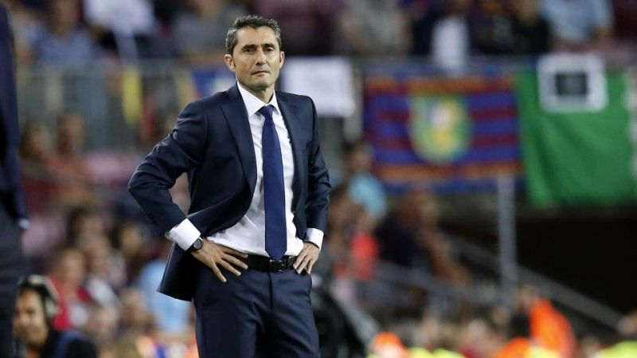

BARCELONA GANA SU SEXTA CHAMPIONS SEGUIDA

Parece ser que la epoca de Pep Guardiola ha quedado en el pasado. Ayer en la noche el FC Barcelona gano su sexto trofeo de Champions League en seis años, algo nunca antes hecho. Este gane abre paso a la nueva dinastia del futbol, guiados por el mejor futbolista del mundo, Lionel Messi. Este Barcelona sin duda alguna, es el mejor de todos los tiempos.
MESSI TUVO ALGUNAS PALABRAS QUE DECIR
el astro argentino Lionel Messi tuvo algunas palabras de elogio que decir hacia sus compañeros luego de ganar la final contra el Alianza, diciendo: "Esta victoria en realidad es de todos no solo mia. Todos contibuimos un poco para que se diera el gana y aun estando dos goles abajo supimos remontar y sacar el resultado esperado." Lionel Messi aporto 3 goles al encuentro consolidandose como el mejor jugador del partido, asimismo creando 8 oportunidades asi como tambien una asistencia. La experiencia del 10 argentino fue fundamental para orquestrar la remontada que parecia imposible, y junto como compañeros como Luis Suarez e Philippe Coutinho logragron darle el titulo al club para un sextete de champions perfecto.
VALVERDE GANA SU SEXTO TITULO COMO BALUGRANA
A pesar de empezar sus primeros años en el club con un poco de duda por parte de la aficion y de la directiva, el dia de ayer Ernesto Valverde demostro porque es el tecnico de uno de los equipos mas grandes y prestigiosos del mundo, y que no es simple casualidad el hecho de que se encuentre ahi. Estos ultimos 6 años el Barca ha sido revitalizado con jugadores jovenes de la masia, trayendo de regreso el tan famoso estilo de juego del club. Parece ser hace decadas la era de Pep, ya que ahora ha surgido una nueva dinastia, llevada de la mano del mismisimo Valverde.